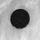
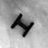
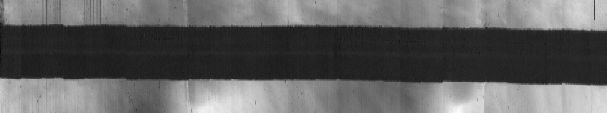
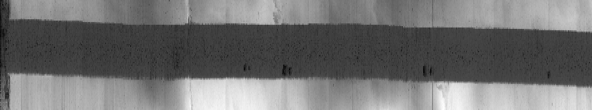
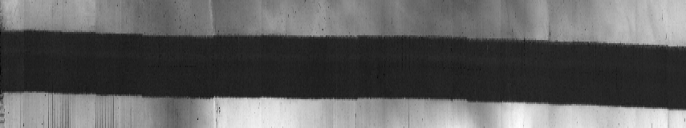
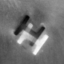

Female
|
|
|
| |||
| teem | / | nrrd | / |
Visible Female |
Fiducial Inspection |
Having cropped out images of the fiducials, we need a way of differentiating the pixels inside and outside the fiducial markers, in order to analyze how they move from slice to slice. Since the markers are gray, the the background is blue, the saturation of the pixel color should be a good indicator. "unu" doesn't know anything about saturation or color, but it can compute the standard deviation of the three color components. More saturated colors will have higher standard deviation. Here are images of the standard deviations of the the circle and I-beam images shown above:
unu project -i avf1130a.raw.Z.circle.ppm -a 0 -m sd \ | unu quantize -b 8 | topng doc/circle-sd.png unu project -i avf1130a.raw.Z.ibeam.ppm -a 0 -m sd \ | unu quantize -b 8 | topng doc/ibeam-sd.png
|  |  |
| circle-sd.png | ibeam-sd.png |
Now we can produce what are essentially graphs of the fiducials' X and Y positions, going through the 855 slices of the head:
There is some non-trivial unu cleverness going on here; each step of the first command (ending with circle-X.png) is:unu join -i *circle.ppm -a 3 \ | unu project -a 0 -m sd | unu project -a 1 -m min \ | unu quantize -b 8 | unu resample -k box -s x2 = \ | unu swap -a 0 1 | topng doc/circle-X.png unu join -i *ibeam.ppm -a 3 \ | unu project -a 0 -m sd | unu project -a 1 -m min \ | unu quantize -b 8 | unu resample -k box -s x2 = \ | unu swap -a 0 1 | topng doc/ibeam-X.png unu join -i *circle.ppm -a 3 \ | unu project -a 0 -m sd | unu project -a 0 -m min \ | unu quantize -b 8 | unu resample -k box -s x2 = \ | unu swap -a 0 1 | topng doc/circle-Y.png unu join -i *ibeam.ppm -a 3 \ | unu project -a 0 -m sd | unu project -a 0 -m min \ | unu quantize -b 8 | unu resample -k box -s x2 = \ | unu swap -a 0 1 | topng doc/ibeam-Y.png
The label for the second axis (Z) is empty because we've never specified one (and currently unu join doesn't have a way of doing that).unu join -i *circle.ppm -a 3 \ | unu project -a 0 -m sd | unu project -a 1 -m min \ | unu head - | grep labels labels: "X" ""

ibeam-X.png: X versus Z

circle-Y.png: Y versus Z

ibeam-Y.png: Y versus Z
What do these pictures tell us? The motivation in making these pictures was to see if there were sharp discontinuities. There are some, such as the shifts downward (toward higher X values) between Z locations 88 and 89, 405 and 406, and 712 and 713, which are visible to some extent in both the circle and I-beam X-versus-Z graphs. But these shifts are small, only about one pixel. For now, we won't try to correct for these; we'll make a volume dataset and then see if any artifacts we notice can be plausibly associated with the displacements measured by the graphs above.
The other thing to notice is that both markers moved in X and Y, and more in Y than in X. We can also see this in differences between images near the top and bottom. To improve image quality, we'll average three images at each location.
unu join -i avf100{7,8,9}a.raw.Z.circle.ppm -a 3 \
| unu project -a 0 -m sd | unu project -a 2 -m mean -o top.nrrd
unu join -i avf128{3,4,5}a.raw.Z.circle.ppm -a 3 \
| unu project -a 0 -m sd | unu project -a 2 -m mean -o bot.nrrd
unu 2op - top.nrrd bot.nrrd \
| unu quantize -b 8 | topng doc/diff-circle.png
unu join -i avf100{7,8,9}a.raw.Z.ibeam.ppm -a 3 \
| unu project -a 0 -m sd | unu project -a 2 -m mean -o top.nrrd
unu join -i avf128{3,4,5}a.raw.Z.ibeam.ppm -a 3 \
| unu project -a 0 -m sd | unu project -a 2 -m mean -o bot.nrrd
unu 2op - top.nrrd bot.nrrd \
| unu quantize -b 8 | topng doc/diff-ibeam.png
|  | |
| diff-circle.png | diff-ibeam.png |